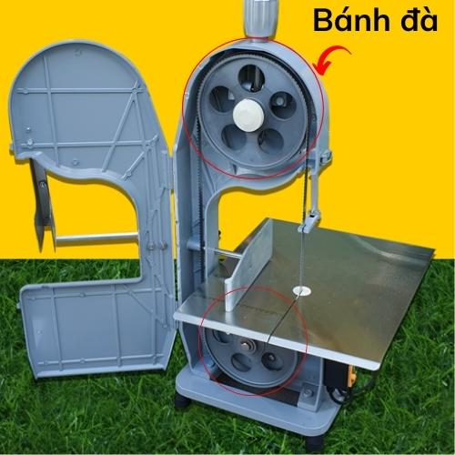

Phụ Kiện Máy Cưa Xương: Nâng Cấp Hiệu Suất, Bảo Vệ Thiết Bị
Phụ kiện máy cưa xương đóng vai trò quan trọng trong việc duy trì hiệu suất hoạt động, kéo dài tuổi thọ máy và nâng cao hiệu quả công việc. Việc lựa chọn và sử dụng đúng loại phụ kiện phù hợp sẽ giúp máy cưa xương hoạt động ổn định, đảm bảo an toàn vệ sinh thực phẩm và mang lại hiệu quả kinh tế cao. Bài viết này sẽ cung cấp thông tin chi tiết về vai trò, phân loại, tiêu chí chọn mua và hướng dẫn sử dụng phụ kiện máy cưa xương hiệu quả.
Vai trò của phụ kiện trong việc nâng cao hiệu quả và tuổi thọ máy cưa xương
Sử dụng phụ kiện phù hợp không chỉ nâng cao hiệu suất mà còn bảo vệ máy cưa xương khỏi những hư hỏng không đáng có, giúp kéo dài tuổi thọ thiết bị.
Đảm bảo hoạt động ổn định, chính xác và an toàn
Phụ kiện chất lượng cao, tương thích với máy đảm bảo sự vận hành trơn tru, độ chính xác trong từng đường cắt, đồng thời giảm thiểu nguy cơ xảy ra sự cố, đảm bảo an toàn cho người sử dụng.
Tối ưu hóa hiệu suất làm việc
Lưỡi cưa sắc bén, bánh đà hoạt động tốt nâng cao tốc độ cưa, giúp xử lý khối lượng lớn thực phẩm trong thời gian ngắn, nâng cao năng suất lao động.
Giảm thiểu hư hỏng, kéo dài tuổi thọ máy
Sử dụng phụ kiện chính hãng, chất lượng tốt giảm thiểu ma sát, mài mòn, hạn chế hỏng hóc, từ đó kéo dài tuổi thọ cho máy cưa xương.
Đảm bảo vệ sinh an toàn thực phẩm
Phụ kiện làm từ chất liệu an toàn, dễ vệ sinh ngăn ngừa vi khuẩn tích tụ, đảm bảo an toàn vệ sinh thực phẩm, bảo vệ sức khỏe người tiêu dùng.
Các loại phụ kiện máy cưa xương cần thiết
Để máy cưa xương hoạt động hiệu quả, bạn cần trang bị đầy đủ các loại phụ kiện cần thiết sau:
Lưỡi cưa xương (lưỡi cưa thường, lưỡi cưa hợp kim...)
Lưỡi cưa là bộ phận tiếp xúc trực tiếp với xương, quyết định đến chất lượng đường cắt. Có nhiều loại lưỡi cưa với chất liệu và kích thước khác nhau, phù hợp với từng loại xương và nhu cầu sử dụng.
- Lưỡi cưa thường: Giá thành rẻ, độ bền trung bình, phù hợp sử dụng trong gia đình.
- Lưỡi cưa hợp kim: Độ cứng cao, chịu mài mòn tốt, cắt được xương cứng, tuổi thọ cao.

Bánh đà máy cưa xương
Bánh đà có tác dụng truyền động từ motor đến lưỡi cưa, giúp lưỡi cưa hoạt động ổn định.
Đá mài lưỡi cưa
Đá mài dùng để mài sắc lưỡi cưa, giúp duy trì độ sắc bén, kéo dài tuổi thọ lưỡi cưa.
Bàn đẩy thịt
Bàn đẩy thịt giúp cố định thực phẩm trong quá trình cưa, đảm bảo an toàn cho người sử dụng, cho đường cắt chính xác, đẹp mắt.
Dây curoa
Dây curoa có nhiệm vụ truyền động từ motor đến bánh đà, đảm bảo hoạt động ổn định của máy.
Chổi vệ sinh
Chổi vệ sinh giúp làm sạch vụn xương bám trên máy sau khi sử dụng, đảm bảo vệ sinh.
Dầu bôi trơn
Dầu bôi trơn giúp b lubricate moving parts, giảm ma sát, mài mòn, kéo dài tuổi thọ máy.
Các phụ kiện khác (tùy vào từng dòng máy)
Ngoài những phụ kiện cơ bản trên, một số dòng máy cưa xương còn có thể sử dụng thêm các phụ kiện khác như: bộ phận điều chỉnh độ dày lát cắt, khay hứng xương, nắp đậy bảo vệ...
Tiêu chí chọn mua phụ kiện máy cưa xương
Lựa chọn phụ kiện phù hợp là yếu tố quan trọng để đảm bảo hiệu quả hoạt động và kéo dài tuổi thọ máy.
Chọn phụ kiện chính hãng, tương thích với model máy
- Phụ kiện chính hãng được sản xuất theo tiêu chuẩn của nhà sản xuất, đảm bảo chất lượng và khả năng tương thích với máy.
- Kiểm tra kỹ thông số kỹ thuật của phụ kiện và máy cưa xương để đảm bảo sự tương thích.
Chất liệu bền bỉ, an toàn
Nên chọn phụ kiện làm từ chất liệu cao cấp, chống gỉ sét, chịu lực tốt như: thép không gỉ, inox 304, nhựa ABS...
Giá cả hợp lý
So sánh giá cả giữa các nhà cung cấp để lựa chọn sản phẩm phù hợp với ngân sách.
Chọn mua tại địa chỉ uy tín
Nên mua phụ kiện tại các cửa hàng, đại lý ủy quyền hoặc các website thương mại điện tử uy tín để đảm bảo chất lượng sản phẩm, chế độ bảo hành, dịch vụ hậu mãi tốt.
Hướng dẫn thay thế và bảo dưỡng phụ kiện
Thay lưỡi cưa
- Rút nguồn điện trước khi thao tác.
- Tháo lưỡi cưa cũ: Sử dụng dụng cụ phù hợp để nới lỏng và tháo lưỡi cưa.
- Lắp lưỡi cưa mới: Lắp đặt lưỡi cưa mới đúng vị trí, vặn chặt ốc vít.
Mài lưỡi cưa
- Sử dụng đá mài phù hợp.
- Mài đều tay, theo một chiều từ trong ra ngoài.
- Không nên mài quá lâu tránh làm nóng lưỡi cưa.
Vệ sinh bàn đẩy thịt
- Tháo rời bàn đẩy thịt khỏi máy.
- Rửa sạch bằng nước rửa chén, sử dụng bàn chải để làm sạch kẽ hở.
- Lau khô và lắp đặt lại vào máy.
Bảo dưỡng dây curoa
- Kiểm tra dây curoa định kỳ để phát hiện các dấu hiệu nứt, gãy, mòn.
- Điều chỉnh độ căng của dây curoa phù hợp.
- Thay thế dây curoa mới khi cần thiết.
Tra dầu mỡ bôi trơn
- Sử dụng dầu bôi trơn chuyên dụng cho máy cưa xương.
- Tra dầu vào các vị trí được khuyến cáo trong sách hướng dẫn sử dụng.
- Tra dầu định kỳ theo khuyến cáo của nhà sản xuất.
Kết luận
Phụ kiện máy cưa xương là yếu tố quan trọng góp phần nâng cao hiệu quả sử dụng và kéo dài tuổi thọ thiết bị. Việc lựa chọn và sử dụng phụ kiện phù hợp sẽ giúp bạn vận hành máy cưa xương an toàn, hiệu quả, đảm bảo vệ sinh an toàn thực phẩm và mang lại hiệu quả kinh tế cao.